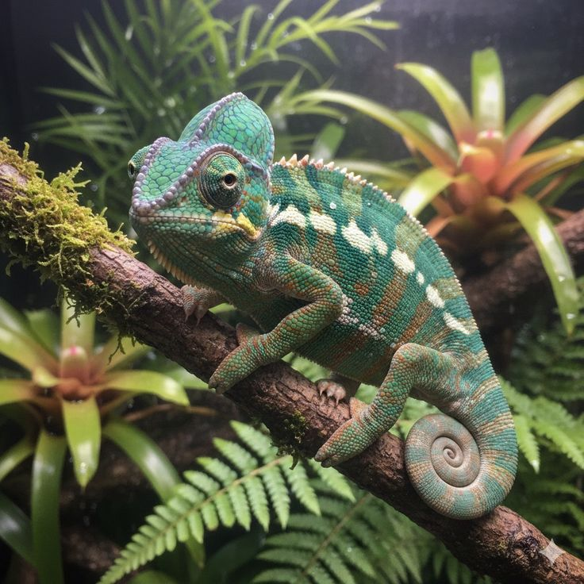

Habita en zonas cálidas con vegetación como bosques, arbustos y selvas, principalmente en África y algunas regiones del sur de Europa y Asia.
Es un reptil arborícola (vive en árboles) y suele ser solitario. Se alimenta principalmente de insectos y utiliza su camuflaje para protegerse de los depredadores y para cazar.